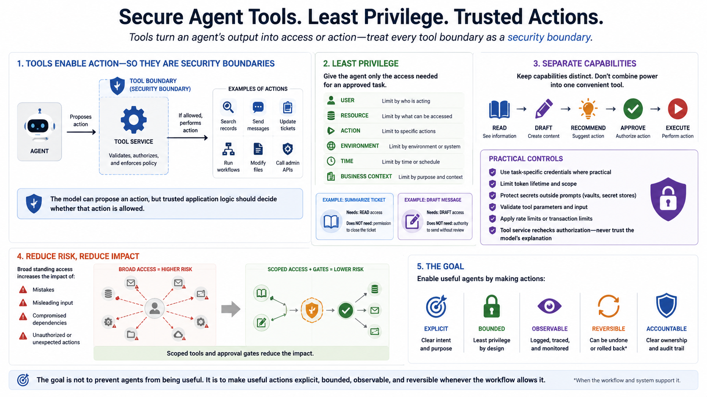

Securing AI Agents
Tool Permissions and Least Privilege
Connecting to LMS... Progress: in progress
Version 1.0 | Date: 2026-06-21
This course provides educational information about securing AI agent systems. It is not legal advice, product-specific implementation guidance, or offensive security training.

Narration
Tools turn an agent's output into access or action, so every tool boundary should be treated as a security boundary. An agent may be able to search records, send messages, update tickets, run workflows, modify files, or call administrative APIs. The model can propose an action, but trusted application logic should decide whether that action is allowed.
Least privilege means giving the agent only the access needed for an approved task. Permissions can be limited by user, resource, action, environment, time, and business context. A support agent that summarizes a ticket may need read access but not permission to close it. An agent that drafts a message may not need authority to send it without review.
Separate capabilities such as read, draft, recommend, approve, and execute. Avoid combining them into one powerful tool simply because that is convenient. Use task-specific credentials where practical, limit token lifetime, protect secrets outside prompts, validate tool parameters, and apply rate or transaction limits. The tool service should recheck authorization instead of trusting the model's explanation.
Broad standing access increases the impact of mistakes, misleading input, and compromised dependencies. Scoped tools and approval gates reduce that impact. The goal is not to prevent agents from being useful. It is to make useful actions explicit, bounded, observable, and reversible whenever the workflow allows it.